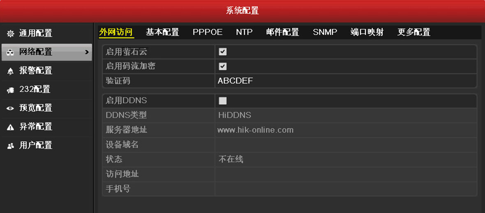
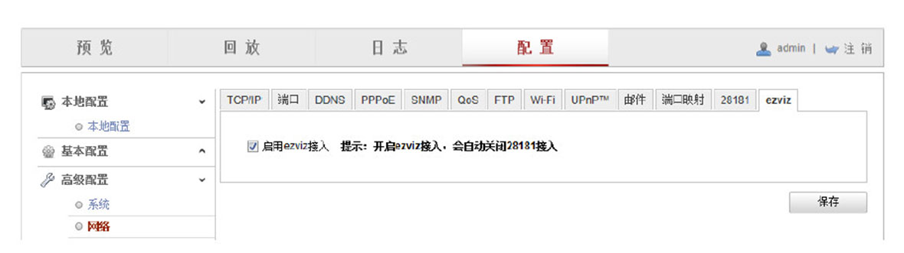

渠道设备该如何添加到萤石云上去呢?
-、启用萤石云，记录设备验证码。 录像机的萤石云设置:在DVR/NVR添加萤石云前需“启用萤石云”
摄像机的萤石云设置:在局域网内输入摄像机的IP地址进行访问，在网络配置中“启用ezviz"。
*注意:要填写正确的IP,子网掩码，网关，还有DNS服务器。
二、注册萤石云账号。
登录www.ys7.com注册萤石云账户。
三、在官网添加设备。
a)点击“进入萤石云”
b)第一次使用请下载并运行插件。
c)点击添加设备。
或者，进入配置管理，点击快速添加设备。
e)选择需要添加的设备类型。(对于渠道产 品，如果是摄像头，则选择网络摄像机里的“其他”
如果是录像机，则选择录像机里的“其他”。)
f)选择局域网中扫描到的设备，选择“+号”,输入设备验证码，完成设备添加。
或者选择序列号添加方式，输入序列号，点击回车,输入验证码,完成设备添加。
四、用手机添加设备
Step1:手机客户端安装
下载方法:可登陆www.ys7.com,在下载与支持中，根据手机系统下载对应的移动客户端(目前支持ios和Android)。
Step2:添加设备
注册好账号密码之后，登录手机客户端。进入手机客户端的界面，点击右上角的“+”号，添加设备。进入序列号扫描界面，请将设备机身上的二维 码放置在扫描框内，手机将自动识别。扫描到设备后，即可进行添加。
也可以通过输入序列号，手动输入机身上验证码的方式进行设备的添加。